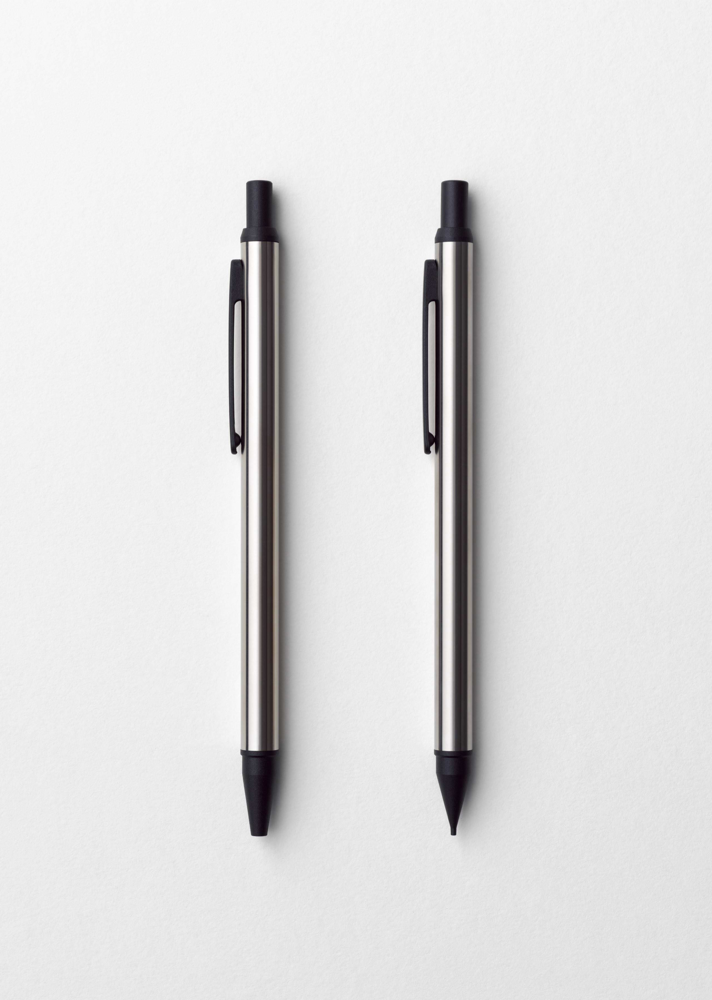

It has been 40 years since Seven Eleven Japan was established. Kashiwa Sato built a design strategy with a focus on its private brand for the purpose of re-branding this global convenience store chain. Kashiwa repositioned Seven Eleven Japan’s private brand, which was in its third year, not by the position of price leader, but by its product quality and image. Thus Kashiwa re-designed more than 1700 items and this initiative has resulted in breaking records for highest sales every quarter.
Kashiwa also worked on the naming, packaging, and designing of coffee makers for ‘Seven Café,’ which created what could be considered a social phenomenon.
While national brands must differentiate themselves against rivals by positioning product package designs as advertising and media, private brands have the advantages of price.
Kashiwa focused on minimal design to maximize those advantages. The simple packaging design, which was well suited to individual family dining tables, was welcomed by consumers who looked for high quality products. Also Kashiwa organized categories, mainly for food, such as ‘daily’, ‘premium’ and ‘gold’, and placed brand logos by category so that customers could easily select products based on their needs. Kashiwa started the ‘lifestyle’ category mainly for daily goods from the 2nd year of re-branding to build the private brand in stages. In the 3rd year, he introduced ‘Seven Café,’ which brought great success to Seven Eleven Japan.
The Japanese Seven Eleven applied a combination of re-branding communication methods to product and introduced design perspectives, which had been a missing factor of convenience store products. As a result, he brought not only huge economic success, but also great impact to innovate the Japanese lifestyle.